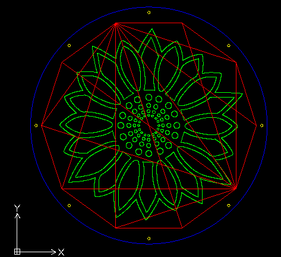

This is a tutorial on how you can make your own lazer cut puzzle using OpenJsCad!
While the name of this page is STL Puzzle, OpenJsCad allows to create regular DXF files as well.
While on the topic of OpenJsCad, I want to give credit to the creators of the library. Most of the fancy 3d rendering on this
page and also much of the structure for this html page is derived from the project source at OpenJsCad on GitHub.
Lets get started making the puzzle!
1. Preface
The goal of this tutorial is to make a puzzle that looks like this:
To do so, we need 3 parts
A backboard plate for the puzzle pieces to lay on
A plate with the puzzle pieces cut out
A clear cover to put on top so that the puzzle can be on display when finished
2. Getting Setup
I have provided the backboard piece and clear cover as solidwork parts or regular dxf files.
Note: These pieces are designed to contain a puzzle 10 inces in diameter.
Below is a simple OpenJsCad rendering of an extruded circle. This is enough to generate an STL file which has
a nice triangle mesh pattern. There are a few parameters to play with below, but you can also just write your own
code to create an extruded shape.
Once you are done playing around, download the STL file and continue to step 4. If you created a 2d drawing, download
the DXF file and skip to step 5.
Open the STL file in MeshLab and save it as a DXF file.
Copy the backboard case .dxf file. Name it puzzle.dxf
Open both DXF files in draft sight.
In DraftSight, copy the dxf geometry from the stl dxf file and paste it in the backboard case dxf. Make sure to paste it
somewhere outside of the backboard case geometry.
Select the stl dxf geometry and color it a different color, such as red. This is so that it can be cut before the backboard is cut.
Using the move tool, click on the center of the stl dxf gemotry, then click on the center of the backboard case.
This should move the stl dxf geometry to the center of the backboard case geometry.
Save the file (it should be called puzzle.dxf)
5. Adding an engraving to the puzzle
Find some image that you want to engrave onto the puzzle. Images that are very simple with obvious outlines work best.
The example puzzle is using this image.
Open the image in inkscape and using the Object>Transform tool, transform the dimensions to 9in x 9in.
Using the Path>Trace Bitmap tool, convert the image to a vector image. You may have to play around with the settings and use the preview
to get everything just right
Delete the underlying bitmap image so that only the vector image is left
Save the file as a DXF
If the DXF file outputed by InkScape doesn't work very well. Try an online tool such as this.
Like Step 4, add the image dxf to the puzzle dxf file. Make sure to color it a entirely different color.
If everthing went well in your puzzle.dxf should look like this:

6. Cut!
Import the combinded dxf file to your lazer cutter's tooling program and cut away!
First cut the backboard case, then the clear case so that you become familiar with the sizes you want.
When cutting the puzzle, the cut order should be: 1. Picture Engraving, 2. Screw holes, 3. Puzzle Cutout, 4. Frame Circle Cutout
Assemble the puzzle with screws and nuts, screw length will vary depending on the thickness of the material you used.
You will need longer screws for the cover. Also when screwing in the cover, do not tighten the screws too much if you want
the pieces inside to be able to move around a little.
{kind=link}